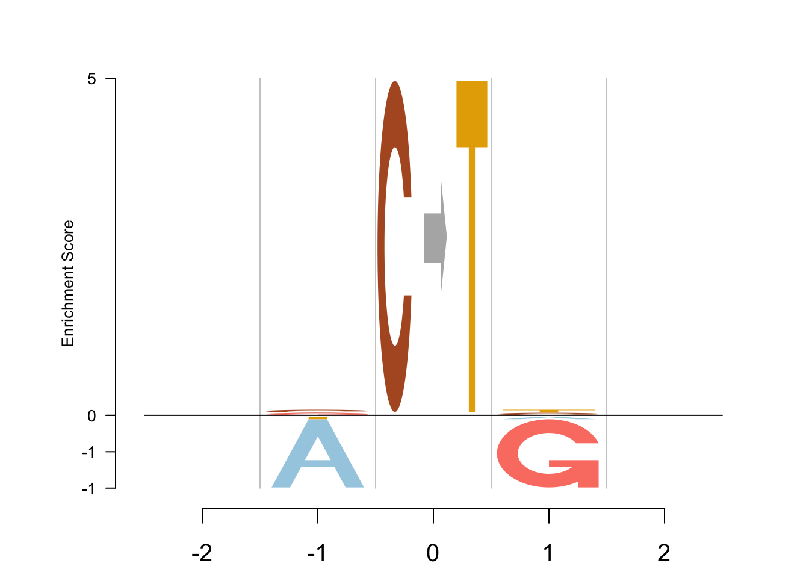
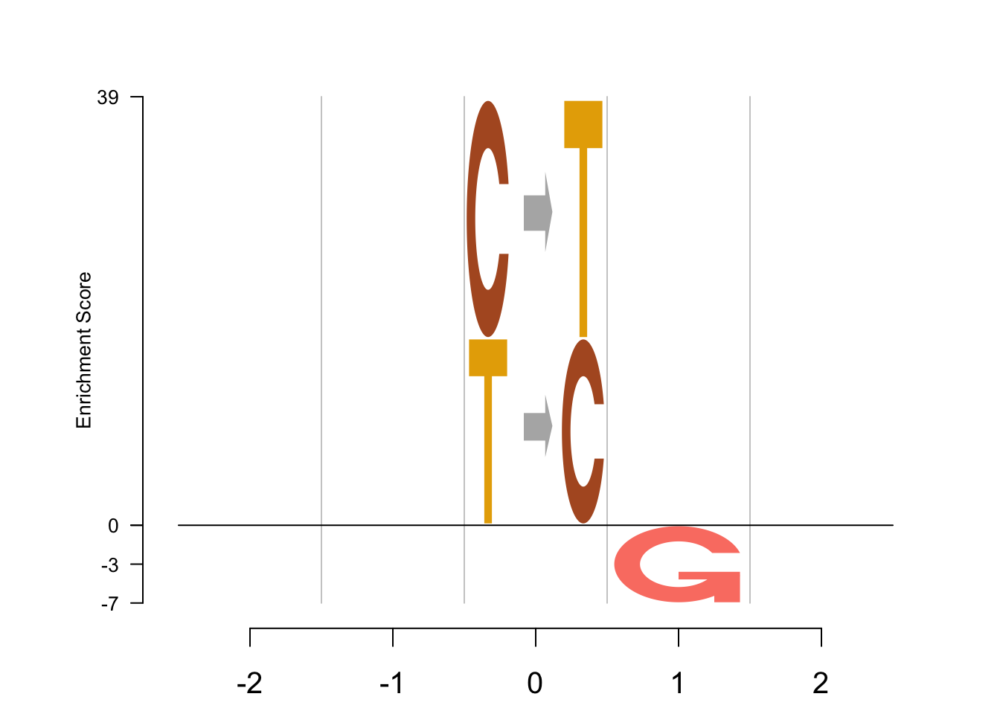

Data
mat=read.table(paste('../data/Fig4_rawdata/sig_',12,'.txt',sep = ''))
mat1=cbind(t(mat[2:3,1:4]),rep(NA,4),t(mat[4:5,1:4]))
rownames(mat1)=c('A','C','G','T')
colnames(mat1) = c("-2", "-1", "0", "1", "2")
mat2=cbind(rep(NA,6),rep(NA,6),t(mat[1,]),rep(NA,6),rep(NA,6))
colnames(mat2) = c("-2", "-1", "0", "1", "2")
rownames(mat2) = c("C>A", "C>G", "C>T", "T>A", "T>C", "T>G")
table = rbind(mat1, mat2)
table
## -2 -1 0 1 2
## A 0.1429512 0.08494982 NA 0.197080025 0.2767577
## C 0.1689498 0.46431232 NA 0.313653183 0.2454964
## G 0.2191480 0.31705404 NA 0.002281516 0.1927627
## T 0.4689511 0.13368382 NA 0.486985276 0.2849833
## C>A NA NA 7.590720e-10 NA NA
## C>G NA NA 3.232363e-67 NA NA
## C>T NA NA 9.657371e-01 NA NA
## T>A NA NA 1.141712e-39 NA NA
## T>C NA NA 3.426289e-02 NA NA
## T>G NA NA 5.617568e-45 NA NA
cols = RColorBrewer::brewer.pal.info[RColorBrewer::brewer.pal.info$category ==
'qual',]
col_vector = unlist(mapply(RColorBrewer::brewer.pal, cols$maxcolors, rownames(cols)))
col_vector = col_vector[-c(4,5)]
total_chars = c("A", "B", "C", "D", "E", "F", "G", "H", "I", "J", "K", "L", "M", "N", "O",
"P", "Q", "R", "S", "T", "U", "V", "W", "X", "Y", "Z", "zero", "one", "two",
"three", "four", "five", "six", "seven", "eight", "nine", "dot", "comma",
"dash", "colon", "semicolon", "leftarrow", "rightarrow")
set.seed(20)
EDLogo - ash depletion
nP = 10^5, nQ = 10^5
out <- Logolas::logomaker(table,
type = "EDLogo",
color_type = "per_symbol",
color_seed = 2000,
logo_control = list(score = "ash",
y_fontsize=10,
control= list(quant=0.5,
ash_control = list(nP=10^6, nQ=10^6),
gap_ylab = 2.5,
round_off=0,
posbins = 2,
negbins = 3)))
nP = 10, nQ = 10^6
out <- Logolas::logomaker(table,
type = "EDLogo",
color_type = "per_symbol",
color_seed = 2000,
logo_control = list(score = "ash",
y_fontsize=10,
control= list(quant=0.5,
ash_control = list(nP=10, nQ=10^6),
gap_ylab = 2.5,
round_off=0,
posbins = 2,
negbins = 3)))

nP = 10^20, nQ = 10^6
out <- Logolas::logomaker(table,
type = "EDLogo",
color_type = "per_symbol",
color_seed = 2000,
logo_control = list(score = "ash",
y_fontsize=10,
control= list(quant=0.5,
ash_control = list(nP=10^20, nQ=10^6),
gap_ylab = 2.5,
round_off=0,
posbins = 2,
negbins = 3)))
nP = 10^6, nQ = 10
out <- Logolas::logomaker(table,
type = "EDLogo",
color_type = "per_symbol",
color_seed = 2000,
logo_control = list(score = "ash",
y_fontsize=10,
control= list(quant=0.5,
ash_control = list(nP=10^6, nQ=10),
gap_ylab = 2.5,
round_off=0,
posbins = 2,
negbins = 3)))
